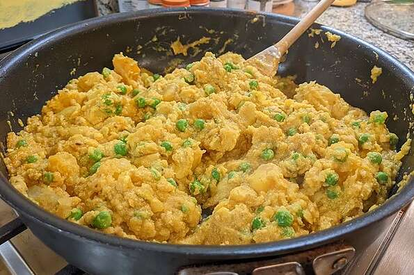

Lasagna Recipe

Description
This is a recipe for a curry dish
W
Ingredients
- 3 tablespoons ghee
- 1 teaspoon cumin seeds
- 1 teaspoon turmeric
- 1 teaspoon ground coriander
- 1 teaspoon salt
- ½ teaspoon mustard seed
- ½ teaspoon ground cayenne pepper
- 6 medium potatoes, peeled and diced
- 2 cups water
- 1 cup yogurt
- ⅔ cup frozen green peas
Steps
-
Heat the ghee in a skillet over medium heat, and mix in the cumin,
turmeric, coriander, salt, mustard seed, and cayenne pepper. Place
potatoes in the skillet, and stir to evenly coat with the ghee. Cook 10
minutes, stirring often. Pour water into the skillet. Reduce heat to
low, and simmer 30 minutes, until potatoes are tender.
-
Mix the yogurt and peas into the saucepan. Continue cooking until heated
through.